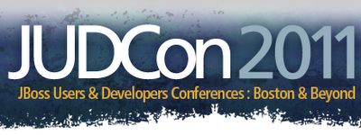

jBPM at JUDCon and JBoss World in Boston in May
The first week of May is going to be busy this year!

First, there is 2 days of JUDCon, May 2 – 3. JUDCon is an event by developers, for developers. I attended JUDCon Berlin last year and it is a great place for developers to learn the details of different technologies and meet the core developers and other community developers out there. Presentations will include a range of deep technical dives into JBoss Community projects and related technical topics of developer interest. And the hack fests allow you to do some real coding as well.
There are a handful of jBPM-related presentations, and many many more. Check out the agenda and register today!
Immediate after JUDCon and on the same venue, there is JBoss World and Red Hat Summit, May 3 – 6, where there will be numerous presentations on a lot of different topics, (j)BPM being one of them. We’ll be touching on a wide area of from the core engine itself to event-driven BPM and decision management. Details in the agenda, and don’t forget to register!